01
封面不是封面
音乐卡片与图片组件统一用 @672w_378h_1c 把 B 站图裁成 16:9 视频缩略图；本地音乐扫描器只取 title 与 duration，LocalMusicItem 里没有封面字段。
瓦片改用真实 16:9 比例并挂来源徽标；无封面内容单独设计载体。
C+ · 满幅剧场 · 能力可读版 Full-bleed Theater · Capability-readable
保留 C 的沉浸语言，修掉三处前提错误，并补齐整条信息架构。
设计稿第 01 页原文
保留 C 的沉浸语言，修掉三处前提错误，并补齐整条信息架构。
C 的问题不在审美，而在它把赌注押在「封面」与「无 UI」上——而这个项目的封面素材与操作密度都不支持这两个前提。
音乐卡片与图片组件统一用 @672w_378h_1c 把 B 站图裁成 16:9 视频缩略图；本地音乐扫描器只取 title 与 duration，LocalMusicItem 里没有封面字段。
瓦片改用真实 16:9 比例并挂来源徽标；无封面内容单独设计载体。
单曲 8 项能力、播放列表 8 项能力、音频 8 档音质（含杜比全景声与无损）、下载 6 种状态，PRD 把「列表密度、右键菜单、批量操作」列为桌面原则。
玻璃圆片扩充成玻璃操作带，直接露出播放 / 下一首 / 入队 / 收藏 / 下载音频。
web-interface-search-type 的 search_type 只有 video / bili_user，没有歌曲与歌单；PRD 4.3 明令不得承诺「搜索歌曲、专辑、歌手」，验收标准 14.2 亦然。
Tab 收为「音乐视频 / 创作者」，搜索框文案改为「搜索音乐视频或创作者」。
信息架构：我的音乐库（我创建 / 我收藏 / 本地目录 / 下载）与搜索为一级入口；发现音乐收敛为单一 B 站音乐分区（1003）模块，已下线 流行 / 鬼畜。C+ 专栏 12 屏覆盖全部一级页面与常驻能力（播放栏 / 播放队列 / 当前播放详情 / 设置）。
点击任一屏进入 1440 × 900 原始画布（等比缩放居中）
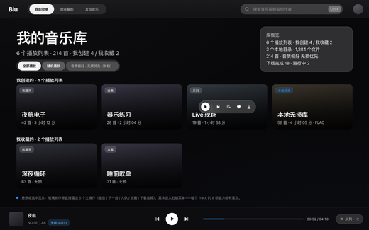
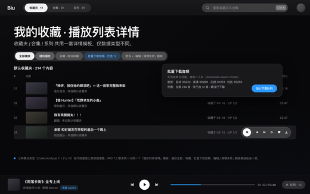
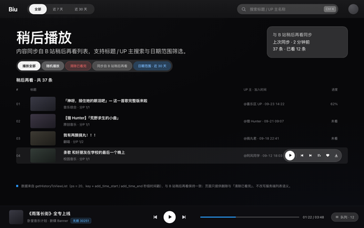
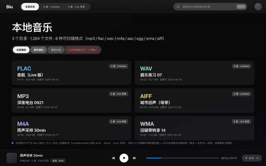
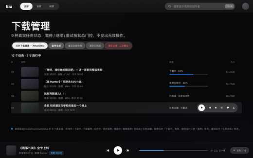
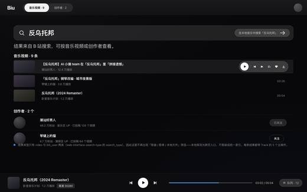
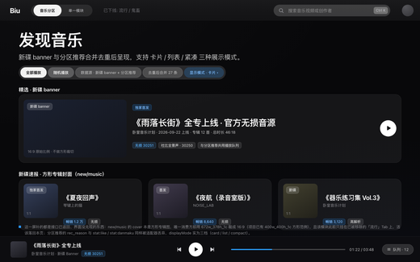
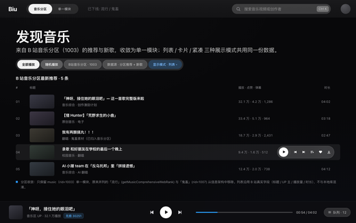
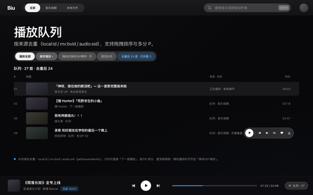
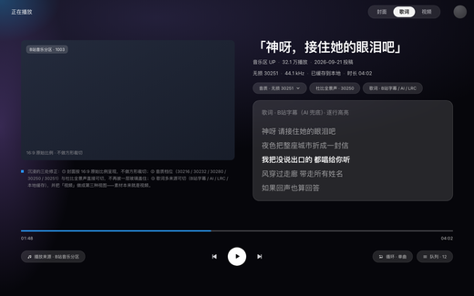
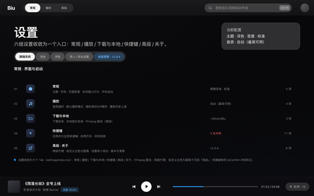
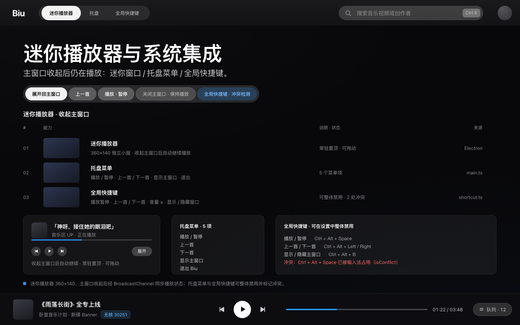
沿用 C 的语言，仅补真实能力色 · 设计稿第 14 页原文
补充真实能力色
#5AB4FF
本地目录徽标#2997FF
危险操作#FF6B6B
本地格式色
#5AB4FF
WAV#7ED8A8
AIFF#E5C07B
M4A#B99BE8
MP3#C8C8CE
WMA#C8C8CE
正文族 -apple-system / SF Pro / PingFang SC，数字用 SF Pro Display 表格式数字
设计稿第 14 页原文 · 遮罩与圆角都有明确职责边界
0 满幅影像 / 999 圆片，界面里没有直角卡片。面板 20、瓦片 12、药丸 999。
只用于可读性：统一 26% + 底部渐隐，不作为装饰。
白 16% + 描边白 + 背景模糊 20。
由设计稿 PNG 逐像素量得（原始 2200 × 1375，换算 1440 × 900 画布），并以无头 Chrome 回环校验。
全部数值落在 assets/tokens.css。
| 项目 | 数值 | 令牌 | 说明 |
|---|---|---|---|
| 画布 | 1440 × 900 | --stage-w / --stage-h | 等比缩放居中，任何窗口下比例一致 |
| 顶栏 / 播放栏 | 71 / 88 | --topbar-h / --playbar-h | 常驻两层，内容区弹性填充 |
| 左右留白 | 64 | --gutter | 标题、列表、注解带统一对齐 |
| 列表行高 | 68 | --row-h | 行与行之间无分隔线 |
| 行内缩略图 | 100 × 56（16:9） | --art-w / --art-h | B 站图按 16:9 承载，不方形裁切 |
| 图 → 文间距 | 31 | --track-gap | 标题 / 副标题左边界 |
| 右侧两列 | 220 + 152 | --col4 / --col5 | 来源 / 时长（时长列右对齐） |
| 列表右缩进 | 40 | --list-pad-r | 与操作带的右边界 |
| 筛选条 | 48 容器 + 36 药丸 | --r-pill | 6px 内边距，药丸间距 4 |
| 沉浸态封面 | 639 × 359 | — | 16:9 原始比例，不做方形裁切 |
| 沉浸态底部 | 进度 y700 / 控制带 752–808 | — | 无独立播放栏，节奏内嵌 |
| 注解带 | top 598 / 653 / 693 / 694 / 698 / 704 | .note--* | 逐屏实测回环校正，非视觉估算 |